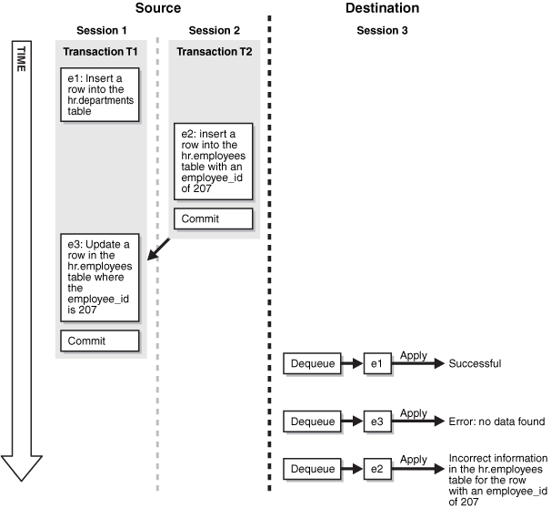
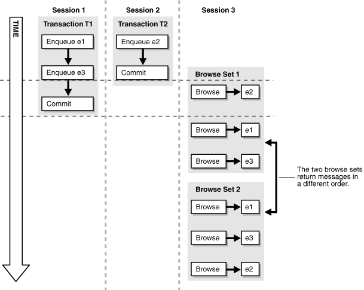

8 Advanced Queue Concepts
The following topics contain conceptual information about staging messages in queues and propagating messages from one queue to another:
See Also:
8.1 Secure Queues
Secure queues are queues for which Oracle Database Advanced Queuing (AQ) agents must be associated explicitly with one or more database users who can perform queue operations, such as enqueue and dequeue. The owner of a secure queue can perform all queue operations on the queue, but other users cannot perform queue operations on a secure queue, unless they are configured as secure queue users. In Oracle Streams, you can use secure queues to ensure that only the appropriate users and Oracle Streams clients enqueue messages and dequeue messages.
8.1.1 Secure Queues and the SET_UP_QUEUE Procedure
All ANYDATA queues created using the SET_UP_QUEUE procedure in the DBMS_STREAMS_ADM package are secure queues. When you use the SET_UP_QUEUE procedure to create a queue, any user specified by the queue_user parameter is configured as a secure queue user of the queue automatically, if possible. The queue user is also granted ENQUEUE and DEQUEUE privileges on the queue. To enqueue messages and dequeue messages, a queue user must also have EXECUTE privilege on the DBMS_STREAMS_MESSAGING package or the DBMS_AQ package. The SET_UP_QUEUE procedure does not grant either of these privileges. Also, a message cannot be enqueued unless a subscriber who can dequeue the message is configured.
To configure a queue user as a secure queue user, the SET_UP_QUEUE procedure creates an Oracle Streams AQ agent with the same name as the user name, if one does not already exist. The user must use this agent to perform queue operations on the queue. If an agent with this name already exists and is associated with the queue user only, then the existing agent is used. SET_UP_QUEUE then runs the ENABLE_DB_ACCESS procedure in the DBMS_AQADM package, specifying the agent and the user.
If you use the SET_UP_QUEUE procedure in the DBMS_STREAMS_ADM package to create a secure queue, and you want a user who is not the queue owner and who was not specified by the queue_user parameter to perform operations on the queue, then you can configure the user as a secure queue user of the queue manually. Alternatively, you can run the SET_UP_QUEUE procedure again and specify a different queue_user for the queue. In this case, SET_UP_QUEUE skips queue creation, but it configures the user specified by queue_user as a secure queue user of the queue.
If you create an ANYDATA queue using the DBMS_AQADM package, then you use the secure parameter when you run the CREATE_QUEUE_TABLE procedure to specify whether the queue is secure or not. The queue is secure if you specify TRUE for the secure parameter when you run this procedure. When you use the DBMS_AQADM package to create a secure queue, and you want to allow users to perform queue operations on the secure queue, you must configure these secure queue users manually.
8.1.2 Secure Queues and Oracle Streams Clients
When you create a capture process or an apply process, an Oracle Streams AQ agent of the secure queue associated with the Oracle Streams process is configured automatically, and the user who runs the Oracle Streams process is specified as a secure queue user for this queue automatically. Therefore, a capture process is configured to enqueue into its secure queue automatically, and an apply process is configured to dequeue from its secure queue automatically. In either case, the Oracle Streams AQ agent has the same name as the Oracle Streams client.
For a capture process, the user specified as the capture_user is the user who runs the capture process. For an apply process, the user specified as the apply_user is the user who runs the apply process. If no capture_user or apply_user is specified, then the user who invokes the procedure that creates the Oracle Streams process is the user who runs the Oracle Streams process.
When you create a synchronous capture, an Oracle Streams AQ agent of the secure queue with the same name as the synchronous capture is associated with the user specified as the capture_user. If no capture_user is specified, then the user who invokes the procedure that creates the synchronous capture is the capture_user. The capture_user is specified as a secure queue user for this queue automatically. Therefore, the synchronous capture can enqueue into its secure queue automatically.
If you change the capture_user for a capture process or synchronous capture or the apply_user for an apply process, then the specified capture_user or apply_user is configured as a secure queue user of the queue used by the Oracle Streams client. However, the old capture user or apply user remains configured as a secure queue user of the queue. To remove the old user, run the DISABLE_DB_ACCESS procedure in the DBMS_AQADM package, specifying the old user and the relevant Oracle Streams AQ agent. You might also want to drop the agent if it is no longer needed. You can view the Oracle Streams AQ agents and their associated users by querying the DBA_AQ_AGENT_PRIVS data dictionary view.
When you create a messaging client, an Oracle Streams AQ agent of the secure queue with the same name as the messaging client is associated with the user who runs the procedure that creates the messaging client. This messaging client user is specified as a secure queue user for this queue automatically. Therefore, this user can use the messaging client to dequeue messages from the queue.
A capture process, a synchronous capture, an apply process, or a messaging client can be associated with only one user. However, one user can be associated with multiple Oracle Streams clients, including multiple capture processes, synchronous captures, apply processes, and messaging clients. For example, an apply process cannot have both hr and oe as apply users, but hr can be the apply user for multiple apply processes.
If you drop a capture process, synchronous capture, apply process, or messaging client, then the users who were configured as secure queue users for these Oracle Streams clients remain secure queue users of the queue. To remove these users as secure queue users, run the DISABLE_DB_ACCESS procedure in the DBMS_AQADM package for each user. You might also want to drop the agent if it is no longer needed.
Note:
No configuration is necessary for propagations and secure queues. Therefore, when a propagation is dropped, no additional steps are necessary to remove secure queue users from the propagation's queues.
See Also:
-
"Disabling a User from Performing Operations on a Secure Queue"
-
Oracle Database PL/SQL Packages and Types Reference for more information about Oracle Streams AQ agents and using the
DBMS_AQADMpackage
8.2 Transactional and Nontransactional Queues
A transactional queue is a queue in which messages can be grouped into a set that are applied as one transaction. That is, an apply process performs a COMMIT after it applies all the messages in a group. A nontransactional queue is one in which each message is its own transaction. That is, an apply process performs a COMMIT after each message it applies. In either case, the messages can be LCRs or user messages.
The SET_UP_QUEUE procedure in the DBMS_STREAMS_ADM package always creates a transactional queue. The difference between transactional and nontransactional queues is important only for messages that were enqueued by an application, a synchronous capture, or an apply process. An apply process always applies captured LCRs in transactions that preserve the transactions executed at the source database.
Table 8-1 shows apply process behavior for each type of message and each type of queue.
Table 8-1 Apply Process Behavior for Transactional and Nontransactional Queues
| Message Type | Transactional Queue | Nontransactional Queue |
|---|---|---|
|
Captured LCRs |
Apply process preserves the original transaction. |
Apply process preserves the original transaction. |
|
Persistent LCRs or Persistent User Messages |
Apply process applies a user-specified group of messages as one transaction. |
Apply process applies each message in its own transaction. |
When it is important to preserve the transactions executed at the source database, use transactional queues to store the messages. Ensure that LCRs captured by synchronous captures are stored in transactional queues.
See Also:
-
Oracle Database Advanced Queuing User's Guide for more information about message grouping
8.3 Commit-Time Queues
You can control the order in which messages in a persistent queue are browsed or dequeued. Message ordering in a queue is determined by its queue table, and you can specify message ordering for a queue table during queue table creation. Specifically, the sort_list parameter in the DBMS_AQADM.CREATE_QUEUE_TABLE procedure determines how messages are ordered. Each message in a commit-time queue is ordered by an approximate commit system change number (approximate CSCN), which is obtained when the transaction that enqueued each message commits.
Commit-time ordering is specified for a queue table, and queues that use the queue table are called commit-time queues. When commit_time is specified for the sort_list parameter in the DBMS_AQADM.CREATE_QUEUE_TABLE procedure, the resulting queue table uses commit-time ordering.
For Oracle Database 10g Release 2 and later, the default sort_list setting for queue tables created by the SET_UP_QUEUE procedure in the DBMS_STREAMS_ADM package is commit_time. For releases before Oracle Database 10g Release 2, the default is enq_time, which is described in the section that follows. When the queue_table parameter in the SET_UP_QUEUE procedure specifies an existing queue table, message ordering in the queue created by SET_UP_QUEUE is determined by the existing queue table.
Note:
A synchronous capture always enqueues into a commit-time queue to ensure that transactions are ordered properly.
8.3.1 When to Use Commit-Time Queues
A user or application can share information by enqueuing messages into a queue in an Oracle database. The enqueued messages can be shared within a single database or propagated to other databases, and the messages can be LCRs or user messages. For example, messages can be enqueued when an application-specific message occurs or when a trigger is fired for a database change. Also, in a heterogeneous environment, an application can enqueue at an Oracle database messages that originated at a non-Oracle database.
Other than commit_time, the settings for the sort_list parameter in the CREATE_QUEUE_TABLE procedure are priority and enq_time. The priority setting orders messages by the priority specified during enqueue, highest priority to lowest priority. The enq_time setting orders messages by the time when they were enqueued, oldest to newest.
Commit-time queues are useful when an environment must support either of the following requirements for concurrent enqueues of messages:
Commit-time queues support these requirements. Neither priority nor enqueue time ordering supports these requirements because both allow transactional dependency violations and inconsistent browses. Both settings allow transactional dependency violations, because messages are dequeued independent of the original dependencies. Also, both settings allow inconsistent browses of the messages in a queue, because multiple browses performed without any dequeue operations between them can result in different sets of messages.
See Also:
8.3.1.1 Transactional Dependency Ordering During Dequeue
A transactional dependency occurs when one database transaction requires that another database transaction commits before it can commit successfully. Messages that contain information about database transactions can be enqueued. For example, a database trigger can fire to enqueue messages. Figure 8-1 shows how enqueue time ordering does not support transactional dependency ordering during dequeue of such messages.
Figure 8-1 Transactional Dependency Violation During Dequeue
Description of "Figure 8-1 Transactional Dependency Violation During Dequeue"
Figure 8-1 shows how transactional dependency ordering can be violated with enqueue time ordering. The transaction that enqueued message e2 was committed before the transaction that enqueued messages e1 and e3 was committed, and the update in message e3 depends on the insert in message e2. So, the correct dequeue order that supports transactional dependencies is e2, e1, e3. However, with enqueue time ordering, e3 can be dequeued before e2. Therefore, when e3 is dequeued, an error results when an application attempts to apply the change in e3 to the hr.employees table. Also, after all three messages are dequeued, a row in the hr.employees table contains the wrong information because the change in e3 was not executed.
8.3.1.2 Consistent Browse of Messages in a Queue
Figure 8-2 shows how enqueue time ordering does not support consistent browse of messages in a queue.
Figure 8-2 Inconsistent Browse of Messages in a Queue
Description of "Figure 8-2 Inconsistent Browse of Messages in a Queue"
Figure 8-2 shows that a client browsing messages in a queue is not guaranteed a definite order with enqueue time ordering. Sessions 1 and 2 are concurrent sessions that are enqueuing messages. Session 3 shows two sets of client browses that return the three enqueued messages in different orders. If the client requires deterministic ordering of messages, then the client might fail. For example, the client might perform a browse to initiate a program state, and a subsequent dequeue might return messages in a different order than expected.
8.3.2 How Commit-Time Queues Work
The commit system change number (CSCN) for a message that is enqueued into a queue is not known until Oracle Database writes the redo record for the commit of the transaction that includes the message to the redo log. The CSCN cannot be recorded when the message is enqueued. Commit-time queues use the current SCN of the database when a transaction is committed as the approximate CSCN for all of the messages in the transaction. The order of messages in a commit-time queue is based on the approximate CSCN of the transaction that enqueued the messages.
In a commit-time queue, messages in a transaction are not visible to dequeue and browse operations until a deterministic order for the messages can be established using the approximate CSCN. When multiple transactions are enqueuing messages concurrently into the same commit-time queue, two or more transactions can commit at nearly the same time, and the commit intervals for these transactions can overlap. In this case, the messages in these transactions are not visible until all of the transactions have committed. At that time, the order of the messages can be determined using the approximate CSCN of each transaction. Dependencies are maintained by using the approximate CSCN for messages rather than the enqueue time. Read consistency for browses is maintained by ensuring that only messages with a fully determined order are visible.
A commit-time queue always maintains transactional dependency ordering for messages that are based on database transactions. However, applications and users can enqueue messages that are not based on database transactions. For these messages, if dependencies exist between transactions, then the application or user must ensure that transactions are committed in the correct order and that the commit intervals of the dependent transactions do not overlap.
The approximate CSCNs of transactions recorded by a commit-time queue might not reflect the actual commit order of these transactions. For example, transaction 1 and transaction 2 can commit at nearly the same time after enqueuing their messages. The approximate CSCN for transaction 1 can be lower than the approximate CSCN for transaction 2, but transaction 1 can take more time to complete the commit than transaction 2. In this case, the actual CSCN for transaction 2 is lower than the actual CSCN for transaction 1.
Note:
The sort_list parameter in CREATE_QUEUE_TABLE can be set to the following:
priority, commit_time
In this case, ordering is done by priority first and commit time second. Therefore, this setting does not ensure transactional dependency ordering and browse read consistency for messages with different priorities. However, transactional dependency ordering and browse read consistency are ensured for messages with the same priority.
See Also:
Oracle Streams Replication Administrator's Guide for information about creating a commit-time queue